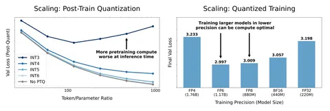

Scaling laws успешно применяются при проектировании LLM, позволяя определить оптимальное число параметров модели N и объём обучающих данных D (в токенах) для минимизации лосса L при фиксированных вычислительном бюджете C. Эта методология, например, использовалась при создании флагманской модели LLaMA 3. Сегодня разберём публикацию о чувствительном к точности scaling law.
Авторы статьи подчёркивают, что традиционные scaling laws предполагают фиксированную точность представления параметров модели P (например, FP16) как на этапе обучения, так и на инференсе. В свете развития аппаратной поддержки вычислений с пониженной точностью (например, FP4 в архитектуре NVIDIA Blackwell), исследование оптимального компромисса между P, N и D становится важной задачей. Поэтому авторы публикации решили проанализировать влияние квантизации после обучения (post-training quantization) модели на качество и модификации scaling laws с учётом точности параметров.
Авторы провели 465 экспериментов с моделями размером от 30M до 1,7B (N), обученными на 1,5–26B токенов (D), с использованием точности от 3 до 16 бит (P). В основе исследований — архитектура OLMo и датасет Dolma v1.7, а в качестве алгоритма квантизации — GPTQ. Основные выводы:
— Деградация качества после квантизации усиливается при росте соотношения D/(N⋅P) и сильном сжатии весов. Перетренированные (overtrainned) модели — с высоким D/(N⋅P) — демонстрируют наибольшую чувствительность к квантизации. В крайних случаях увеличение D приводит к ухудшению итогового качества после квантизации, то есть дополнительное обучение начинает вредить инференсу. Тут можно заметить противоречие, если мы захотим обучить модель с фиксированным числом параметров N: с одной стороны, уменьшение точности весов модели при обучении делает её менее чувствительной к пост-квантизации, а с другой — это увеличивает отношение D/(N⋅P), из-за чего качество будет деградировать. Однако эксперименты показали, что первый эффект перевешивает второй.
— В статье предложили модифицированную формулу для scaling laws с учётом post-train-квантизации, а также точности P для весов, активаций и KV-кэша.
— Авторы пришли к выводам, что оптимальная битность при совместной оптимизации N, D, P в их пайплайне составила 7–8 — независимо от бюджета C=N⋅D⋅P. Это говорит о том, что на практике обучение в FP16 может быть избыточным, в то время как погоня за слишком низкой битностью (ниже 4 бит) потребует непропорционального увеличения N (более чем в четыре раза) и сделает такие подходы неэффективными.
— Обнаруженная авторами зависимость показывает, что при фиксированном C уменьшение P приоритезирует рост N над увеличением D. Например, при переходе от FP16 к FP8 освободившиеся ресурсы в первую очередь стоит потратить на увеличение размера модели.
— В случае, если мы обучаем модель с фиксированным числом параметров N (например, когда обучаем семейство моделей на общем претрейн-датасете), оптимальная точность весов P для перетренерованной модели без post-train-квантизации растёт, при увеличении числа токенов в претрейне D.
Несмотря на интересные результаты, авторы отмечают, что у их работы есть ограничения, которые ещё необходимо исследовать. Так, они использовали единую архитектуру для моделей с различной точностью P; в расчётах полагали, что скорость вычислений линейно зависит от P, а это не всегда верно на практике. Также для оценки качества модели использовали только лосс без метрик в downstream-задачах.
Разбор подготовил
Душный NLP
